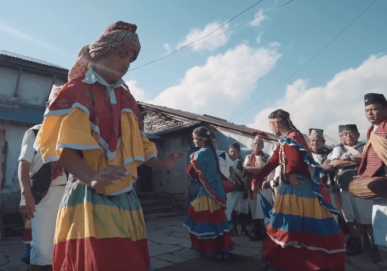
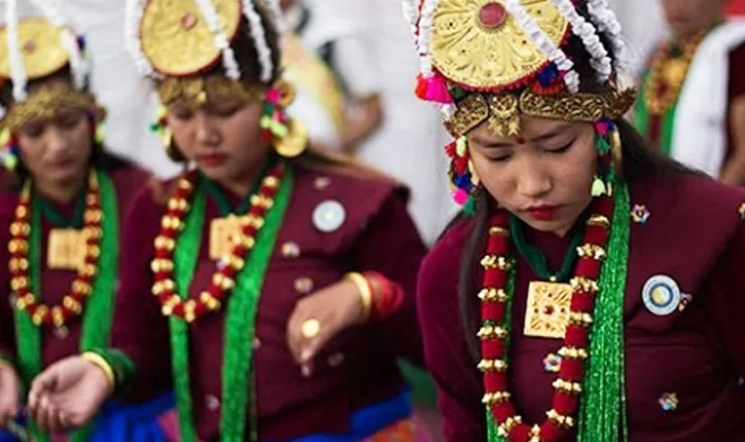
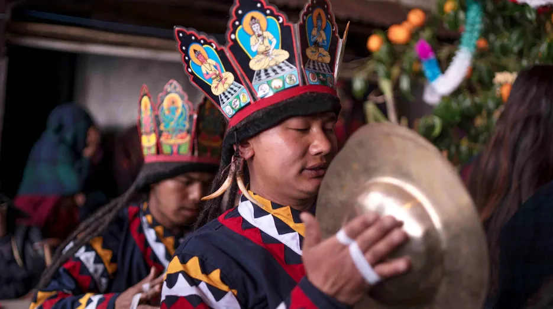
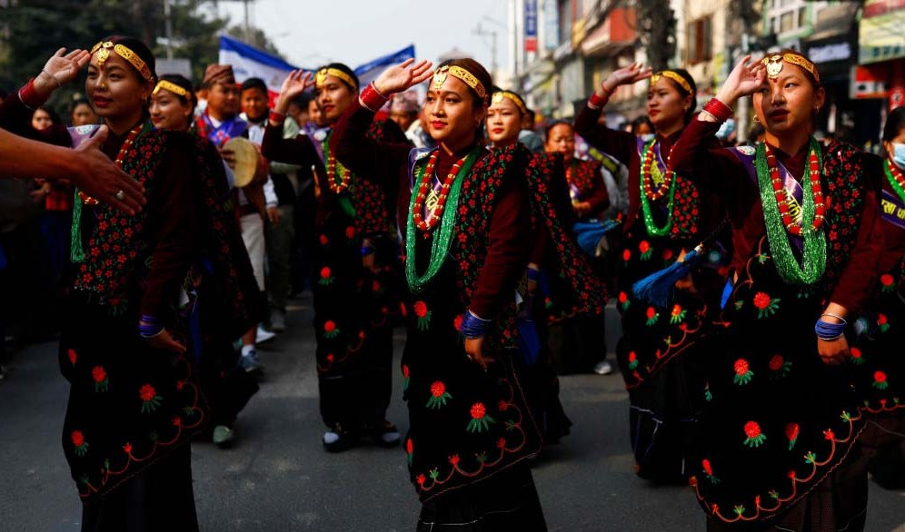

Music helps us travel through every phase of life and Science says that singing releases oxytocin that helps release stress and anxiety. But, that’s not all, singing is a fun and anywhere activity. There are different forms of songs and folk song is a unique one. Since GTWS is working towards promoting and safeguarding Gurung Culture, you can learn a lot about Gurung folk music and Gurung folk songs here. GTWS has different courses starting from basic level ranging up to advanced courses that teach you how to sing the Gurung folk songs with the right melodies, pitch, and instruments. Within the lessons provided on Gurung folk music at GTWS, you will learn folk songs from three different regions of Gurungs. The folk songs from these regions include harvest songs, drinking songs, welcome songs, marriage songs, and ceremonial songs.
-

Krishna Chalitra, Krishna Charitra Dance is a type of cultural dance performed during ceremonies among Gurung communities in Nepal. The unique style of dance with outrageous beat and tempo of Madal, the melodious song which describes the life event of god Krishna makes this dance an outstanding cultural dance specially among Lamjung Gurung communities
-

Ghatu dance is a Nepalese folk dance of the Gurung community of western Nepal. The dance is performed mainly during Baisakh Purnima festival. The dance is started on the previous new moon day of the same month. The dancers are selected on the day of Shree Panchami and then trained for three/four months.
-

Tahote(Thote) is a ritualistic festival of the Tamu Gurung people, performed to forbid the entry of evil energies into the village community. It aims to address ritual ceremonies as the beginning of all power and energy to shape the village for the better, by warding off any unseen, unfavorable influence from the outside. We can be fairly certain that this tradition predates Tamu Gurung’s conversion to Buddhism.
-

This image is from the Tamu Lhosar. All the artist are dancing in the ralli. This picture is taken in Tudikhel in the loshar.